Five levels exist. Seven do not. This page is the map of how a reader with no statistics gets to designing an experiment, what each level owes the one after it, and which hops have traps in them.
Fifteen places name a level number, and they are not all HTML. Title cards read “Level 2 · ±3σ is not taste”, and narration speaks “Level one told us which distribution every subgroup mean is drawn from”. Renaming files alone leaves nine acts contradicting their own pages.
Renumbering costs a rebuild and nothing else, because the voice is local and free. Do it after any line is recorded in Ammar’s own voice and those takes are wasted. Renumber first, record later.
level-0…4.html are live on Pages and cited in an open PR against
portfolio-site. Every old path keeps a stub that redirects to its new number and carries
rel="canonical", or shared links start 404-ing.
A twelve-slot map with five things in it only works if the numbers are frozen before anything is authored against them. Moving one topic later renumbers everything downstream a second time.
The SPC site never teaches GR&R; the MSA site never teaches control limits. They link once each, at the seam: Level 11 hands over mid-thought on variance decomposition, and MSA hands back to Level 8 with “a Cpk is only as good as the gage”.
Not a shortfall. DOE at the acts’ quality bar is weeks of authoring, and a surface you drag teaches an interaction better than a video of one. Video stays available for anything that later earns it.
| What | Path | Note |
|---|---|---|
| This contract | specs/curriculum-arc-contract.md | numbers, medium, the §4 checklist re-read before each level is called done |
| Frozen design | DESIGN.md | tokens, two voices, the ban list. Unchanged by this work |
| Act craft rules | specs/spc-manim-craft-contract.md | derive by motion, explicit rate_func, closed 6/6 checkpoints |
| Level pages | level-*.html | renumbered; old paths become redirect stubs |
| Acts and library | spc-lab/src/spclab/ | nine scenes; every on-screen number computed here, tested in spc-lab/tests |
| Narration and voice | spclab/narration.py · kokoro_voice.py | say() drives pacing; Kokoro am_michael runs locally |
| One-command build | spc-lab/build-media.sh | mp4 + poster + VTT for all nine, faststart re-muxed |
| This map | diagrams/curriculum-arc.{mmd,svg,png,excalidraw} | edit the .mmd and re-render; the excalidraw opens at excalidraw.com |
WERules scene was absorbed into it and retired, and section 9.6 moved here with it.